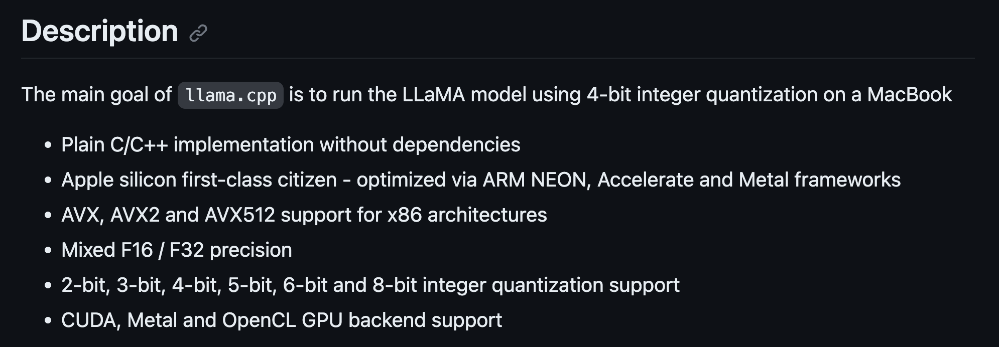
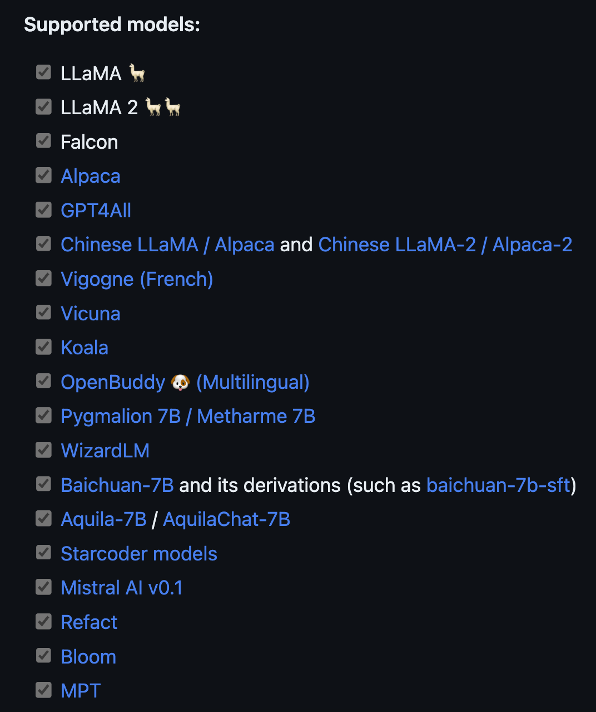

# check if we can import the llama.cpp python bindings
from llama_cpp import LlamaLesson 4: Quantized LLMs with llama.cpp
fractal
python
LLM
Using llama.cpp to run a quantized Gemma model.
Intro
Welcome to the fourth lesson. Here is what we have done so far:
- Lesson 1: Created a python environment for LLMs.
- Lesson 2: Set up a personal blog to track our progress.
- Lesson 3: Ran our first LLM using the HuggingFace API.
In this notebook, we will run an LLM using the llama.cpp library. We’ll deploy a version of the powerful, recently released Gemma model.
llama.cpp is a library that lets us easily run quantized LLMs. What does it mean for a model to be quantized?
Quantized models
Quantizing a model reduces the amount of memory it takes up. This lets us run previously too-large models on less powerful hardware, like a laptop or a small, consumer GPU.
Quantization works by reducing the number of bits that represent a model’s weights. For example, instead of using floats with 32 bits of precision, we can use 8-bit or 4-bit floats to reduce the memory footprint by quite a bit.
LLMs do lose some accuracy and power when their weights are quantized. But, the drop in performance is more than made up for by the ability to run larger models on smaller machines. It’s better to run something, than to not run anything at all.
Overview of llama.cpp
llama.cpp is a library focused on running quantized LLMs on Mac computers. Despite its name, the project supports many other models beyond Llama and Llama-2. It also has a set of python bindings to make our lives easier.
The picture below from project’s README shows the low-level details about how the repo works and what it supports.

The original project was hacked together in a single evening, and has since become arguably the SOTA for deploying LLMs on CPUs. This is in largely thanks to the helpful and dedicated community behind it.
Below we can see the full list of models that llama.cpp supports as of writing.

The benefits of llama.cpp stretch beyond its code and models. Folks are always collaborating in Pull Requests to bring in the latest, greatest advances from the flood of LLM progress. In fact, tracking these PRs is a great way of keeping up to date with the larger LLM field.
Note
The proof of the community’s power is in the this notebook. Originally, it used a Mistral model. And even though Gemma was released very recently, there was a PR to run it with llama.cpp within a few days of release.
The community is also open to hackers and new approaches: if there is proof than an idea works, then it gets merged in.
Next, let’s use llama.cpp to run a quantized Gemma model.
Running Gemma with llama.cpp
This section covers the following:
1. Create a virtual env for llama.cpp
2. Instal the llama.cpp repo
3. Download a quantized Gemma model
4. Run the model directly with llama.cpp
5. Run the model in a Jupyter Notebook
First, we create a mamba environment to keep our work isolated. Then we download and install the llama.cpp repo. Next we download the actual gemma-7b-it model from the HuggingFace Model Hub. Lastly, we run the gemma-7b-it model first with C++ and then in a Jupyter Notebook.
Installing llama.cpp
Start by creating a new mamba environment for llama.cpp.
# create an environment for llama.cpp
mamba create -y -n llama-cpp python=3.11This isn’t strictly necessary for llama.cpp since it uses C++, but we will need the env later for the python bindings. And in any case, it’s a good idea to keep our projects in isolated environments.
Next up, activate this new environment.
# activate the environment
mamba activate llama-cppNow clone the repo and move into the directory.
# clone and move into the llama.cpp repo
git clone https://github.com/ggerganov/llama.cpp
cd llama.cppAfter cloning, we can move inside and prepare it for the build.
There are two options to build llama.cpp:
- GNU Make
- CMake
Previously I had some issues with make on Mac. However, again thanks to the great llama.cpp community, the issues have been fixed. Go ahead and build the llama.cpp project.
# from the main llama.cpp directory, build it
makeThat’s it! llama.cpp is now installed. We can now grab the quantized Gemma model.
The Gemma model
We will be working with the gemma-7b-it model. What exactly does it do? We can find out by breaking down the name a bit:
- gemma is the name given by the developers. - 7B means that the model has 7 billion parameters
- it means that it was trained to follow and complete user instructions
The link above takes you to the official, original model page on HuggingFace. I went ahead and quantized and uploaded a few models, as part of the lesson (check the Appendix for more details).
Once on the page, click on the Files tab near the top. Here you’ll see a big list of different quantized models.
The files shown here are variants of the same, base gemma-7b-it model that were quantized in different ways. Why are there two different files, and how are they different?
Breaking down the quantized gemma names
You can see how each quantized gemma model ends with a format like: Q*_*.gguf.
For example the first file above is: gemma-7b-it-v0.1.Q4_K_S.gguf. We already covered what the first part of the name means.
The Q4 part tells us that the model was quantized with 4-bits. The K_S part refers to the specific flavor of quantization that was used.
There is an unfortunate tradeoff between quantization and performance. The fewer bits we use, the smaller and faster the model will be at the code of performance. And the more bits we use, the better its performance but the slower and larger the model.
In general, the Q4 and Q5 models offer a good balance between speed, performance, and size.
Here we stick with the Q5_K_M model. It is not much larger than the Q4 model, and has a performance better enough to make it worthwhile.
Before grabbing this model, we need to install the huggingface-hub command-line interface (CLI) is installed. This tool will let us point to and download any model on the HuggingFace hub.
Downloaidng a quantized Gemma model
# install a tool to download HuggingFace models via the terminal
pip install huggingface-hubThen move into models/ and create a gemma-7b-it folder. Having one folder for each family of models keeps the folder from getting cluttered. Once inside, download the Q5_K_M model.
# from the llama.cpp directory, move into the models directory
cd models
# create and move into the gemma-7b-it directory
mkdir gemma-7b-it
cd gemma-7b-it
# download the quantized gemma-7b-it model
huggingface-cli download enzokro/gemma-7b-it-gguf \
gemma-7b-it-Q5_K_M.gguf \
--local-dir . \
--local-dir-use-symlinks False
# download the quantized gemma-7b-it model
huggingface-cli download TheBloke/Mistral-7B-Instruct-v0.2-GGUF \
mistral-7b-instruct-v0.2.Q4_K_S.gguf \
--local-dir . \
--local-dir-use-symlinks False
huggingface-cli download TheBloke/Llama-2-7B-Chat-GGUF \
llama-2-7b-chat.Q4_K_M.gguf \
--local-dir . \
--local-dir-use-symlinks FalseOnce the model is downloaded, we can run it with the main binary from the llama.cpp repo.
Note
The binaries are created as part of the build process - make sure you’ve ran those before going forward.
Running the Gemma model
Let’s get right to it. Start with the command below, which will immediately prompt and run the quantized gemma model. We’re asking it to give us 10 simple steps for building a website. Then, we’ll breakdown exactly what the command is doing.
# run a simple example to see quantized Gemma in action
./main -m models/gemma-7b-it/gemma-7b-it-Q5_K_M.gguf \
-p "Please provide 10 simple steps for building a website." \
--in-prefix "<start_of_turn>user\n" \
--in-suffix "<end_of_turn>\n<start_of_turn>model\n" \
-e \
--temp 0 \
--repeat-penalty 1.0 \
--no-penalize-nlThe -m flag points to the quantized model weight we downloaded into the models/gemma-7b-it folder.
The -p flag is the prompt for the model to follow.
Here is where things get interesting. Remember that Gemma was trained to follow instructions from a user. During training, it was shown a pair of <PROMPT> and <RESPONSE> strings. The <PROMPT> string is the user’s input, and the <RESPONSE> string is the model’s output.
That means the model expects to see the same <PROMPT> | <RESPONSE> format in its input. This is very similar to the text preprocessing steps we covered in Lesson 3. Making sure we follow the model’s expected prompt format is the last text preprocessing step we must do.
Without this prompt structure, the model will technically still run. But we’d be throwing away a huge portion of the model’s power.
For the Gemma models, the <PROMPT> must begin with the phrase <start_of_turn>user\n. This tells the model to prepare for an instruction. And the <RESPONSE> string must begin with the phrase <end_of_turn>\n<start_of_turn>model\n. This tells the model to start following the request.
We specify the first string by passing in the --in-prefix argument. And we specify the second by passing in the --in-suffix argument. Our actual prompt will be sandwiched between these two strings:
<start_of_turn>user
|| INSTRUCTION_HERE ||
<end_of_turn>
<start_of_turn>modelThe last three arguments are specific to the instruction model. They control the temperature, the repeat penalty, and the penalty for newlines.
--temp 0
--repeat-penalty 1.0
--no-penalize-nlThink of them as sprinkles on top to get better model outputs. And for reference, they were suggested by Georgi Gerganov, the main author of llama.cpp.
Gemma model outputs
Here’s a the output I got after running the command:
Please provide 10 simple steps for building a website.
1. Choose a Domain Name: Select a domain name that is relevant to your website’s content and easy to remember.
2. Choose a Web Host: Select a web hosting service that meets your needs in terms of bandwidth, storage space, and reliability.
3. Select a Content Management System (CMS): Choose a CMS platform that offers the features you need to manage your website content easily.
4. Design Your Website: Create a visually appealing website design that is responsive to different devices.
5. Add Content: Populate your website with high-quality content that is relevant to your target audience.
6. Optimize for Search Engines: Use SEO techniques to optimize your website for search engines to improve its visibility.
7. Create a Mobile-Friendly Version: Ensure your website is responsive and optimized for mobile devices.
8. Promote Your Website: Use social media and other marketing channels to promote your website.
9. Track and Analyze: Monitor your website’s performance and analyze user behavior to identify areas for improvement.
10. Continuously Update: Keep your website up-to-date with new content, updates, and security patches.
Congratulation! We have now:
- Downloaded and built llama.cpp.
- Downloaded a quantized Gemma model.
- Ran the Gemma model on a sample input.
Everything so far was done in C++ via the terminal.
Next, let’s run the Gemma model inside a Jupyter Notebook with the llama.cpp python bindings. This will give us a preview into a fun way of augmenting your work with LLMs: coding alongside an Agent that you can talk to anytime by popping into a code cell.
Running Gemma with python
Make sure to install the llama.cpp python bindings inside of the mamba virtual environment we created earlier.
The pair of pip commands below will install the bindings.
# install the python bindings with Metal acceleration
pip uninstall llama-cpp-python -y
CMAKE_ARGS="-DLLAMA_METAL=on" pip install -U llama-cpp-python --no-cache-dirThe two commands above:
- First uninstall older versions of the bindings, if any are found.
- Then, it installs the bindings with Metal (Mac GPU) acceleration.
Note
Make sure to change the CMAKE_ARGS to CUDA if running on Linux.
Next up, let’s install the ipykernel package. This will let us run the llama.cpp environment inside of a Jupyter Notebook.
# install the ipykernel package to run in notebooks
pip install ipykernelAfter installing the bindings, run the following code snippet in the notebook. This will tell us if the bindings are installed correctly.
If the command above works, we can now run the Gemma model inside a Jupyter Notebook!
We can instantiate a Llama model object and point it to the weights we downloaded earlier. Make sure to change the paths to match your own. Here we point to the Q4 model to try something different.
# point the Llama class to the model weights we downloaded in the previous sections
work_dir = "/Users/cck/repos/llama.cpp/"
llm = Llama(f"{work_dir}/models/gemma-7b-it/gemma-7b-it-Q4_K_M.gguf");Let’s prompt it again to give us 10 steps for building a website.
# asking Gemma for help building a website
prefix = "<start_of_turn>user"
suffix = "<end_of_turn>\n<start_of_turn>model\n"
prompt = "Please provide 10 simple steps for building a website."
full_prompt = f'''<start_of_turn>user
{prompt}
<end_of_turn>
<start_of_turn>model"
'''print(full_prompt)# calling the llm from the notebook
output = llm(
full_prompt,
max_tokens=1000,
temperature=0.0,
repeat_penalty=1.0,
echo=True,
);def some_function(input_one):
# some programming...llm("Please remind me about the XYZ module.")Let’s look inside output to see what the model said.
# viewing the in-notebook gemma-7b-it generation
print(output['choices'][0]['text'])# checking out the llm's arguments
llm??Congrats! We’ve now ran the gemma-7b-it model with llama.cpp in both C++ and python.
The C++ version is ideal for a server or production application. And as for python version, we can now bootup a handy LLM assistant inside a Jupyter Notebook, and ask it questions as we code or develop.
Conclusion
This notebook covered the llama.cpp library and how to use it to run LLMs. We then ran a gemma-7b-it model with llama.cpp in both C++ and python.
The main goal here was to get you familiar with quantized models, which are the ones we’ll eventually be deploy on our local devices.
Appendix 1: Quantizing the gemma-7b-it model
The model we used in this notebook was already quantized. I quantized the official, full GGUF model from Google and uploaded it to my own HuggingFace account.
The steps below are how I quantized this model.
Downloading the original model
First, we move into the models/ folder and download the original model. I create a special hf_models folder to keep any models that came from the huggingface hub. Start from the base llama directory.
# move into the models/ and create a folder for huggingface models
cd models/
mkdir hf_models
cd hf_models# download the original model
huggingface-cli download google/gemma-7b-it \
gemma-7b-it.gguf \
--local-dir . \
--local-dir-use-symlinks FalseOnce we have this model, we can run llama.cpp’s quantize command to compress it. I put this into a proper gemma-7b-it folder inside models/ to keep things organized.
# create a folder for gemma-7b-it
mkdir models/gemma-7b-it# quantize the original model to the Q4_K_M format
./quantize models/hf_models/gemma-7b-it.gguf models/gemma-7b-it/gemma-7b-it-Q5_K_M.gguf Q5_K_M